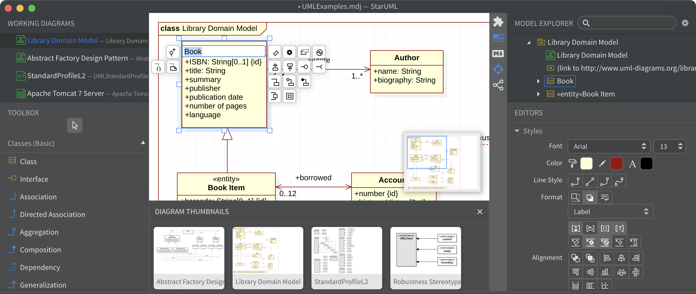

StarUML Ülevaade

Põhijooned:
- Objektorienteeritud modelleerimisvõimalused
- Toetab erinevaid UML 2.0 diagrammitüüpe, sealhulgas klassi-, komponendi-, paketi-, kasutusjuhtumi- ja tegevusdiagramme
- Toetab ka SysML-i, sealhulgas nõuete, plokkide ja sisemiste plokkide diagramme
- Toetatakse pärandmodelleerimismärke, nagu vooskeem, olemi seos (ERD) ja andmevoo diagrammid (DFD)
- Kasutab mudelite salvestamiseks oma JSON-põhist failivormingut (.mdj), mis toetab valitud fragmentide eksportimist eraldi failidesse (.mdf)
- Võimaldab dokumenteerimise eesmärgil genereerida HTML-, PDF- ja EJS-faile
- Võimaldab eksportida diagramme JPEG-, WMF-, SVG- ja PNG-piltidena
StarUML on tarkvarainsenerite tööriist süsteemi modelleerimiseks, kasutades Ühtset Modelleerimiskeelt, samuti Süsteemi Modelleerimise Keelt ja klassikalisi modelleerimisnotatsioone. See on avaldatud MKLabsi poolt ja on saadaval Windowsi, Linuxi ja MacOS-i platvormidel.
StarUML 2.0 tutvustas oma failivormingut (.mdj) ja toetab importimist StarUML 1-failidest (.uml)
WhiteStarUML käsitles Windowsi ühilduvuse ja kaasaegsete ekraanieraldusvõimega seotud probleeme, kuid arendus peatus 2020. aastal Delphiga töötamise väljakutsete ja kogukonna huvi puudumise tõttu.